Sugar-Free Coconut Chiffon Cake or Cupcakes
When it came to naming this cake, I drew a blank. I racked my brain and after a long, intense internal dialogue… it was decided that I would just refer to it as a White Cake. (snooze alert) After some time had passed, I found that didn’t do it any justice. It only described the color instead of the delicious flavor and delicate texture. That is when I was reminded of a chiffon cake.
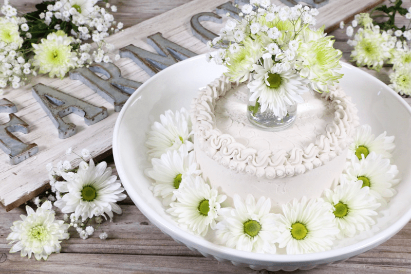
A chiffon cake is a type of sponge cake that is tender and airy. It reminds me of what would happen if an angel cake and pound cake were to procreate. Oh, the thoughts that rattle through my brain. haha
So, here I have created a raw, vegan, grain-free, gluten-free, SUGAR-FREE, cake that is moist, tender, angelic white in color, and ever so delicate in taste. I normally don’t make cakes just for Bob and me. But when I do, I typically pre-slice and tuck them in the freezer so pieces can be removed as desired. The problem (and a good problem to have) was that this cake was so delicious that Bob pulled the whole cake out of the freezer and slipped it into the fridge (unannounced to me). Every day he enjoyed a slice (or two) and every day he marveled as he announced how this has to be one of the best raw cakes that I have ever made. Those are some pretty powerful words.
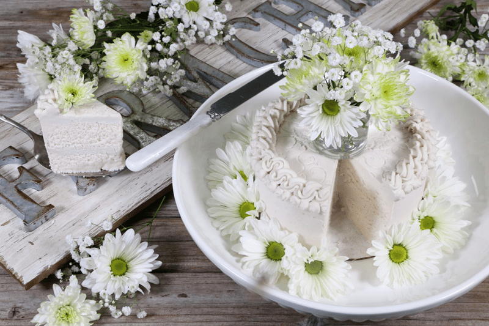
Let’s take a moment for a special announcement from the one and only Bob Oldfather. Take it away babe…
“I am of course a very fortunate man, not only do I have the ongoing joy of living with Amie Sue, but I get unlimited access to a herd(?) of freezers and fridges stocked to the brim with amazing goodies. So when I tell you that this cake is not just one of, but perhaps my favorite of all time, you can believe me. It is not overly sweet, sort of like baby bear “just right”. The amazing thing is that you really can’t tell where the frosting ends and the cake starts. Perfection. Now if I can only convince her to make another one…..”
I want to assure you that this cake is quite simple to make and is a nice change from all the heavy, decadent raw desserts out there. If you don’t mind, I would like to cover a few key ingredients and techniques with you. Please don’t just skim past all of this as there are several important tips
White Almond Pulp & Moisture
When using almond pulp in this recipe, you will need to make sure that the moisture level is spot on to create a moist and tender bite of cake. So, as you are mixing the ingredients together, give the batter a try… the texture that you detect right there at that very moment will be the texture of the cake. The reason that this texture can shift is due to the amount of water extracted from the almond pulp when making the milk.
I have made this recipe several times. The first time, I used my juicer to make the almond milk, which left me with a very dry pulp. I quickly found out as I was mixing the ingredients I had to add a little bit of the milk back in because the juicer did such a fantastic job of extracting ALL the liquid from the pulp. The second time that I made this cake, I made the almond milk the old fashion way… blender, nut bag, and hand squeezing. This method leaves a bit more moisture in the pulp. Feel free to use either method, just be aware that you may need to adjust the recipe to create that perfect airy, tender cake texture.
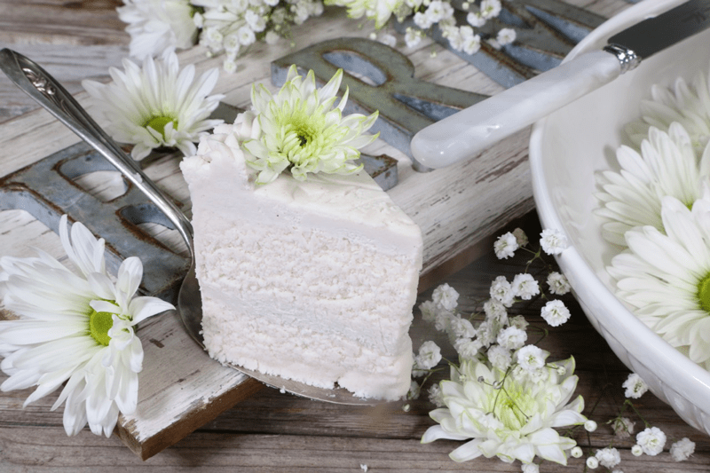
Sugar-Free, How Can it Be?
This took a little finesse. Sweeteners used in raw desserts usually play several roles. They act not only as the sweetener but also as a binder. I had to sit down for this one and plan the cake out. How was I going to achieve the texture and color that I so desired without using either a liquid sweetener or dried fruits? I had to think outside of the sweetener. I had to examine ALL of the ingredients that I wanted to use and make sure they were going to create exactly what I was aiming for. It’s a true balancing act between wet and dry ingredients.
The head-scratching question is… “What makes this cake sugar-free?” In the end, I decided to use Markus Sweet. It’s a sugar alternative made from Lohan Guo Monkfruit and Erythritol (made from non-GMO plant sources). I have used and talked about this sweetener before, so I won’t go into detail about it here. Another alternative sweetener that will work in its place is Lakanto.
Dried Coconut
I used a very fine version of unsweetened dried coconut flakes. As you scan through the ingredient list under “cake”, you will notice that I list out shredded coconut two times. There is a reason and this reason shouldn’t be skipped. The first two cups are to be powdered. You can do this in the food processor, a Magic Bullet, or in the blender. If you use one of the latter two, be really careful that you don’t over-process it and start to make coconut butter. The remaining two cups are added in towards the end. Again, make sure it is finely shredded coconut, which will give you the perfect texture when all is said and done.
Lime Essential Oil
I didn’t add the lime oil to be the dominant flavor of the cake or frosting. It merely plays a supporting role to all the wonderful coconut ingredients and adds in some great health benefits. If need be, you can skip it, or replace it with a lemon essential oil. Just make sure that you use good quality, food-grade, oil.
If you want to ramp up your cake making experience diffuse some of the lime oil while working in the kitchen. It is known to help relieve stress, exhaustion, anxiety, and calm your mind. Who knew a cake ingredient could provide such benefits!
Well, I think I will end here so you can get busy in the kitchen. I hope you enjoy this cake as much as we did. Please be sure to leave a comment below, I love hearing from you. blessings, amie sue
Ingredients:
yields 23 cupcakes (1/4 cup each) or a 9″ cake
Cake:
- 2 cups (190 g) shredded coconut, powdered
- 1/2 cup (145 g) Markus Sweet, powdered
- 1/2 tsp (3 g) Himalayan pink salt
- 2 cups (252 g) young Thai coconut meat
- 1/2 cup ( g) cold-pressed coconut oil, melted
- 3 Tbsp (25 g) vanilla extract
- 5 drops culinary grade lime essential oil
- 4 cups (670 g) packed, moist, white almond pulp
- 2 cups (180g) finely shredded coconut – add in last
Frosting – Yields 5 cups
- 1 3/4 cups (408 g) thick coconut milk, fresh or canned
- 1/2 cup (107 g) MarkusSweet, powdered
- 1/4 cup almond milk
- 1 Tbsp (12 g) vanilla extract
- 1/8 tsp (<1 g) Himalayan pink salt
- 2 cups (286 g) cashews, soaked 2+ hours
- 1 cup (200 g) coconut oil, melted
- 12 drops culinary grade lime essential oil
- NuNatural liquid stevia, to taste
Preparation:
Cake Batter
- In the food processor, fitted with the “S” blade, combine the dry ingredients; powdered shredded coconut, powdered sweetener, and salt.
- Add the Thai coconut meat, melted coconut oil, vanilla, and essential oil. Process until everything is well mixed.
- Transfer mixture from the food processor to a mixer. Add the white almond pulp and finely shredded coconut. Start mixing at a low-speed first than higher until you have a fluffy consistency.
- This will take a few minutes. Allow more time if necessary.
- Occasionally stop and scrape down the sides.
- The cake batter should be soft in consistency and rather light to the touch. If it feels crumbly or dry, it is an indicator that the almond pulp wasn’t very moist. Add 2 Tbsp or more of almond milk so that it is moist and holds together when pinched.
- Now is the time to either create cupcakes or a full-sized cake. See photos below for inspiration.
Frosting
- After soaking the cashews, drain and rinse them well. Set aside.
- In a high-speed blender combine in order; coconut milk, sweetener, almond milk, vanilla, salt, and cashews.
- By placing the liquids in first, it helps the blades spin more easily.
- Blend until creamy and don’t feel any grit in the frosting.
- Depending on the blender, this may take anywhere from 1-5 minutes.
- If you use maple syrup, it will create a cream-colored frosting rather than white.
- While the blender is running and a vortex is in motion, drizzle in the coconut oil and essential oil. Make sure that it gets well incorporated.
- Taste to see if it is sweet enough. If need be, add a few drops of liquid stevia until it reaches a good level for you.
- Place the frosting in an airtight container, tap on the countertop to bring any bubbles up and out, and slip into the freezer for 2-4 hours or until firm.
- How long it takes to set up will vary as some freezers run colder than others. Also, if the batter got warm during the blending process, it will take longer to cool off.
- If it freezes solid, that’s ok. Take it out and let it soften a tad before using, depending on the usage.
- Storage and shelf-life:
- Regardless of where you store the frosting, make sure you keep it in an airtight container. After you place the frosting in the container, smooth out the top of it and press plastic wrap on top, so it isn’t exposed to air.
- In the fridge for 3-5 days.
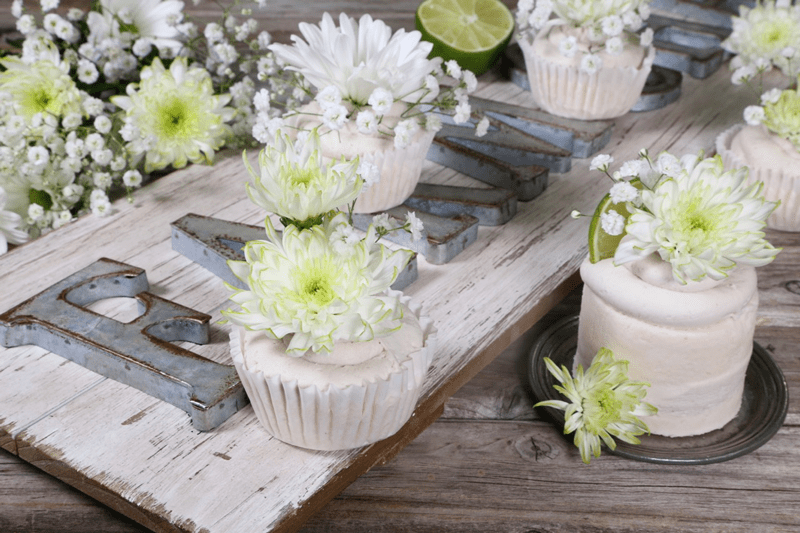
Piping Tips for Cupcakes
- Hold the piping bag and tip upright. If it’s at an angle, you’ll notice that your cupcake swirl is very uneven.
- Start at the very outside edge of the cupcake.
- Squeeze hard enough, and make your swirl so that each new “line” of icing rests on the edge of the line before it.
- As you come to the center, begin to pull your tip further away from the surface, creating a peak.
Additional Cake Tips:
- How to frost a cake. Click here.
- How to slice a cake. Click here.
- How much frosting is needed for a cake? Click here.
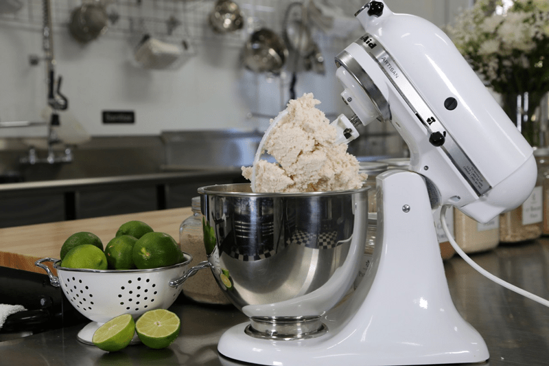
Here is a photo of what the batter looks like… now, let’s make some cakes!
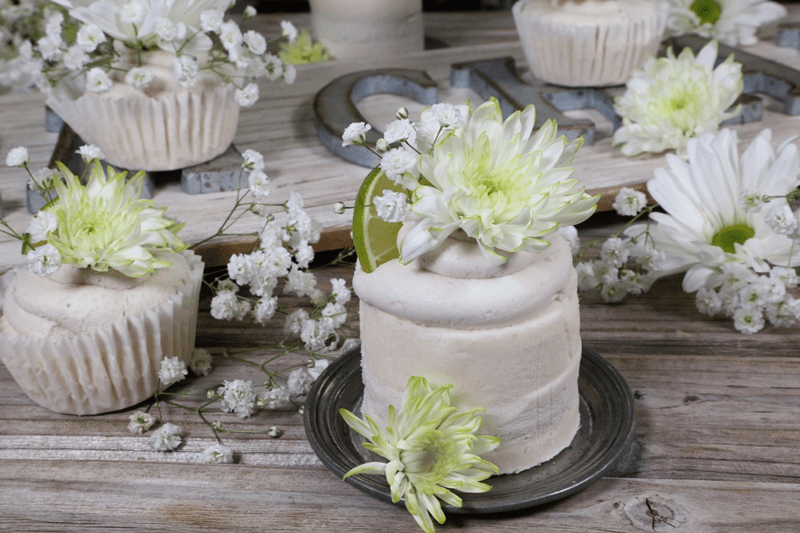
Here is one creative way to make mini cakes. If you don’t have a food ring like in the photo, that’s ok. Use what you have.
-
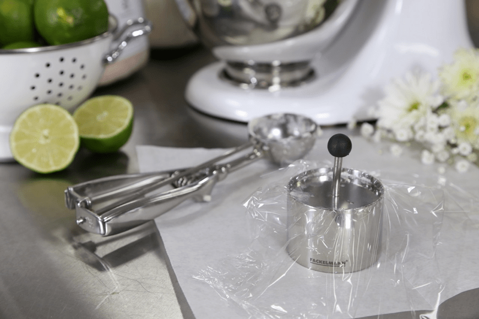
-
Pack the ring, place plastic wrap over the top, and using the plunger, press down firmly.
-
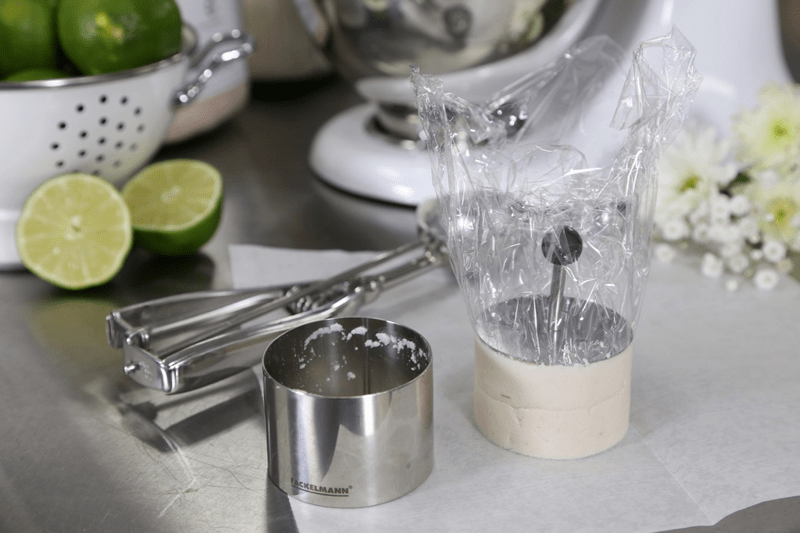
-
Holding the knob on the insert, remove the ring by pulling straight up.
-
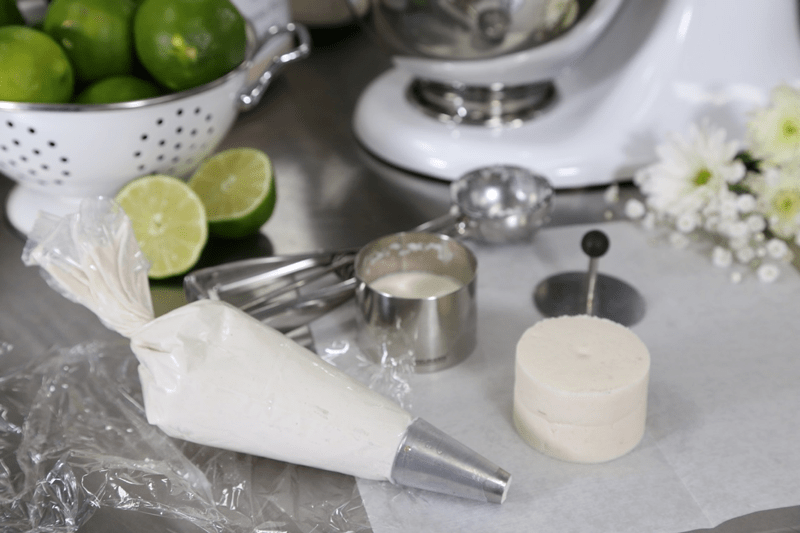
-
Have fun being creative!
-
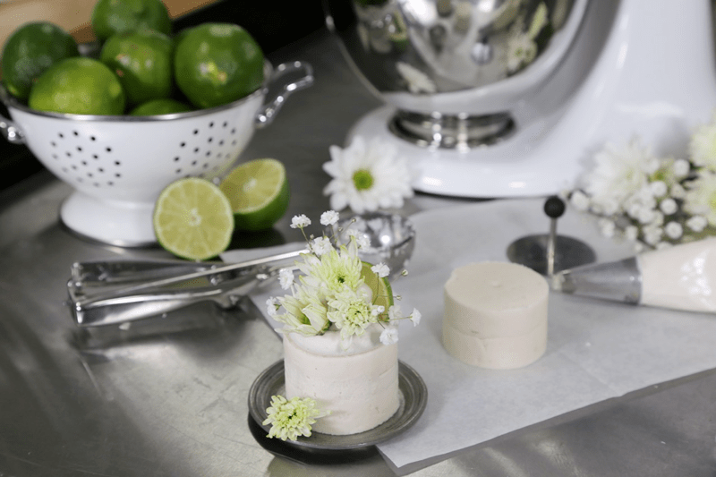
-
Here I piped some frosting on top and used fresh flowers for decorating.
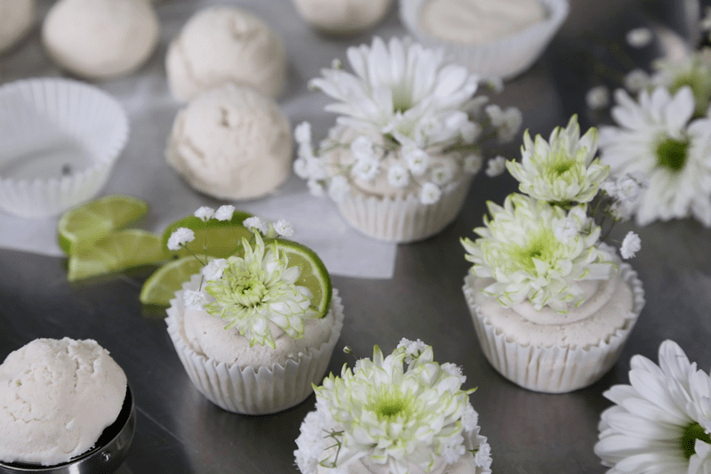
Here are some traditional cupcakes in liners…
-
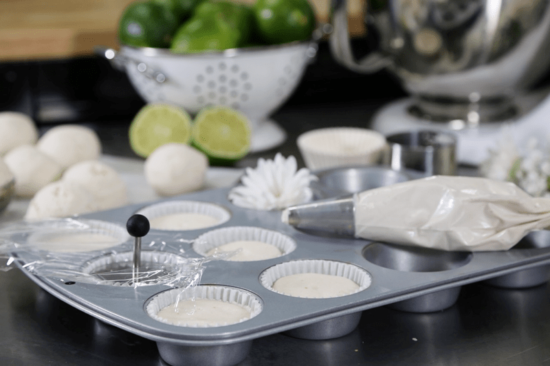
-
I find it much easier to form cupcakes by actually placing the liners in a cupcake pan. The key is to press the batter down firmly so the liner sticks to the cupcake once removed.
-
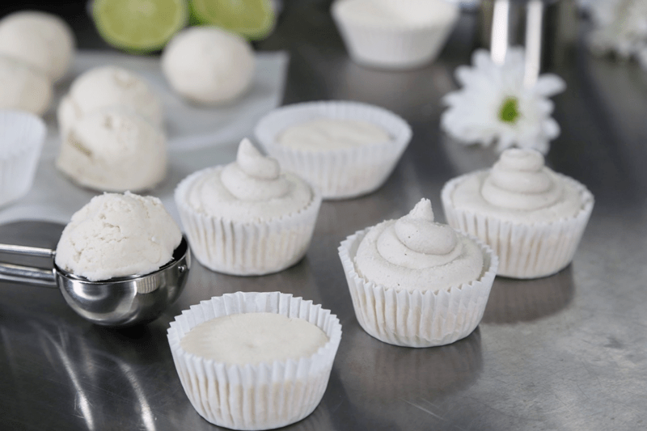
-
Pipe on some frosting, decorate, and enjoy!
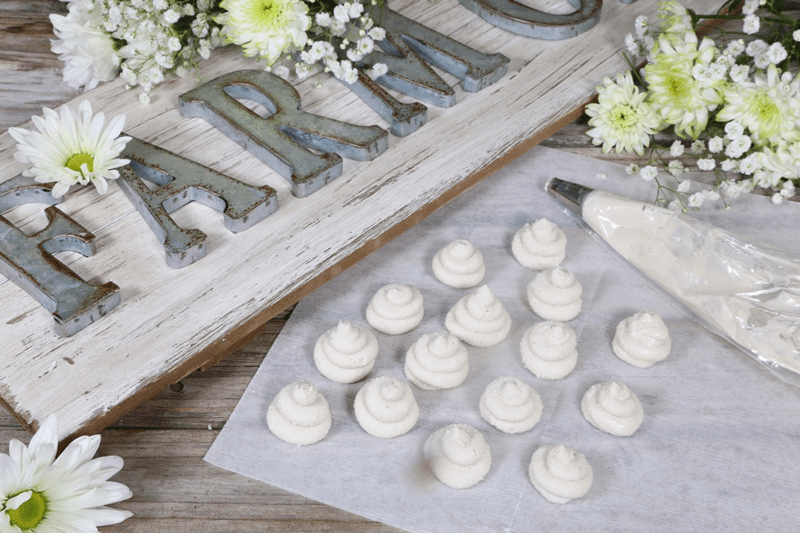
If you have any extra frosting. Pipe out cute little swirls and freeze them. Once frozen, transfer to an airtight container and store in the freezer. Great to add to hot drinks in place of cream and sweetener, dress up a cereal or porridge bowl, or use as a quick decoration for any sweet treat. And if you anything like Bob, pop one in your mouth for a sneaky treat.
This website is not intended to provide medical advice. All content, including text, graphics, images, and information available on this site is for general informational, entertainment and educational purposes only. The content is not intended to be a substitute for professional diagnosis or treatment. The author of this site is not responsible for any adverse effects that may occur from the application of the information on this site. You are encouraged to make your own health care decisions, based on your research and in partnership with a qualified healthcare professional.
© AmieSue.com